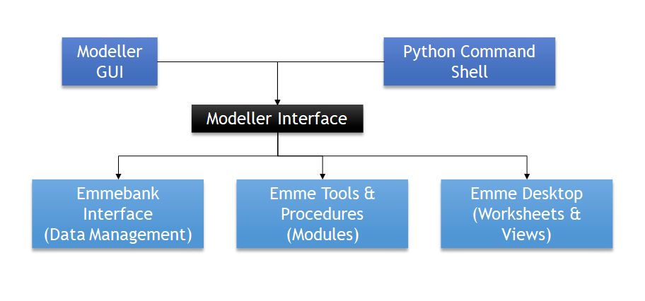
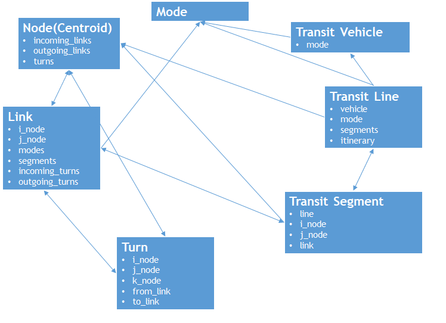

How to write Emme tools
Overview
The TMG toolbox in Emme is Python-based, of which the source code can be found at GitHub. The tools are open-source licensed under GPL3 and can be accessed through Emme Modeller or XTMF.
Modeller is a Python interface to Emme and its associated processes, which can be interacted with using its mouse-driven graphical interface (GUI) or using Python commands.

Custom tools can be created for running through the Modeller GUI, simply by sub-classing inro.modeller.Tool(). A Tool is a Python object, it has
- a
run()method which executes the tool's function - a
page()method which produces the tool's interface - a
__call__()method which works with XTMF
Tools can also be configured to report progress by implementing the percent_completed(min, max, value) method.
Note
For the tools to be called from XTMF, the attribute names used in the __call__() method need to be the same as in the parameter list. Four types of parameters are supported, which are float, integer, string, and bool.
Set up
Tools or scripts for Emme begin with the loading of the modeller library:
import inro.modeller as _m
The Modeller Object is obtained through the library:
_M = _m.Modeller()
The Modeller Object contains linkages to a particular Emme Project:
to return an App object (Emme application), referring to the current Emme Desktop process:
_M.desktopto return an Emmebank object, referring to the active databank for the Emme Project:
_M.emmebankto return the currently-selected primary scenario:
_M.scenarioto return the tool specified by the namespace argument:
_emmetool =_M.tool(namespace='ToolNameSpace')to return a library ('module'):
_util = _M.module('tmg.common.utilities')
Note
ToolNameSpace is the full, unique name for a given INRO standard tool, which distinguishes it from third-party tools, such as the TMG Toolbox. An example will be _ExtendedAssignmentTool =_M.tool('inro.emme.transit_assignment.extended_transit_assignment').
Modules in tmg.common folder contain a variety of helpful 'mini-functions' for Python scripting.
Logbook
To write an entry to the Logbook, an example is as below. The optional value keyword argument accepts a string of HTML, which allows users to attach custom reports:
_m.logbook_write("Hello World", value=None)
To "indent" one level in the Logbook, use the with statement. All other logbook entries written inside the context will be subsequently indented:
with _m.logbook_trace("Trace level one"):
_m.logbook_write("Logbook write level two")
Tip
Modeller's PageBuilder object can be used to help generate HTML for reports to the Logbook. Reports can contain tables, charts, or even images of model results. Several tools in the TMG Toolbox produce reports to the Logbook.
Tool Page Builder
The ToolPageBuilder is a class designed to facilitate building HTML interfaces for Tools.
In order for the Modeller GUI to set tool inputs, each input needs to be declared as an Attribute, with a given type ('declared').
The ToolPageBuilder can then be instructed to add inputs for each Attribute, with a variety of selection types: File browsers, text boxes, radio buttons, and comboboxes.
Common Objects
Matrix & MatrixData
Matrix object is obtained through the Emmebank object. All matrix formats are supported, including Scalar, Origin, Destination, and Full matrices. The Matrix object itself includes metadata only, such as id, timestamp, type, and description. Actual matrix values must be accessed through the special MatrixData object.
Note
Many INRO tools (such as the Matrix Calculator) only require the matrix ID, which is not the same as the Matrix object.
MatrixData object represents an in-RAM copy of matrix values (i.e. just the numbers but not the name). It can be obtained using get_data(scenario_id=None) method of a Matrix object, and can also be 'saved' back to the disk using the set_data(matrix_data, scenario_id=None) method of a Matrix object.
Network
Network object is an in-RAM representation of an Emme network. It manages access, deletion, and creation of network elements, and does so very quickly (as compared to the Network Editor).
In Emme, networks use a load/save system. Network objects are loaded into Python from a Scenario object using get_network(), and the Emme databank is not updated until the Network is saved into a Scenario using publish_network().
There are 7 network elements, which can be accessed, iterated through, created, or removed from the Network object. Their relationship is as shown below:

Each network element has a set of standard and extra attributes. For example, the Link object has the following standard attributes: length, type, num_lanes, volume_delay_func, data1, data2, and data3. Extra attribute values (which are started with '@') must be accessed using the `[attribute_name]` notation, since '@' is a special character in Python.
Example:
link_1 = network.link(20055,20056)
# to access the length of the link
length_link_1 = link_1.length
length_link_1 = link_1['length']
# to access an extra attribute of the link
toll_link_1 = link_1['@toll']
Tip
ExtraAttribute objects are managed by the Scenario object, since each Emme scenario can have distinct sets of extra attributes.
Most tools which require an extra attribute input only require its ID, not the extra attribute object itself!
The Node object can represent both regular nodes and centroids, which can be distinguished using the is_centroid attribute (True for centroids, False otherwise). Similarly, is_intersection attribute can be used to flag nodes which are the k-node of a Turn object. The vertices attribute of Link objects contains a List of (x, y) tuples. Since tuples are immutable in Python, the only way to change link vertices is to replace them entirely.
Segments can be accessed in forward order (starting from 0) or in backwards order (starting with the hidden segment from -1). The segments(include_hidden=False) method is the only iterator method which accepts an argument. Namely, a Boolean flag to indicate whether the iterator should also include the final hidden segment.
Note
- The
volume_delay_funcattribute references the ID of the link's VDF, not the Function object itself. - The Network object only supports deletion and creation of transit lines. There is currently no support for partial editing.
Function
Databank functions also have corresponding objects in the Modeller API, and can be accessed from the Emmebank object using the function() method. All function types are represented, including:
- Volume-delay function (VDF)
- Transit time function (TTF)
- Turn penalty function (TPF)
A Simple Tool Example
import inro.modeller as _m
_M = _m.Modeller()
_tmgTPB = _M.module('tmg.common.TMG_tool_page_builder')
class HelloWorld(_m.Tool()):
version = '1.0.0'
def __init__(self):
self.Scenario = _M.scenario
def page(self):
pb = _tmgTPB.TmgToolPageBuilder(self,
title="Hello World v%s" % self.version,
description="Prints out a Hello world for each entry point.",
branding_text="- TMG Toolbox")
return pb.render()
def run(self):
print "Hello World, Modeller!"
def __call__(self, parameters):
print "Hello World, XTMF"